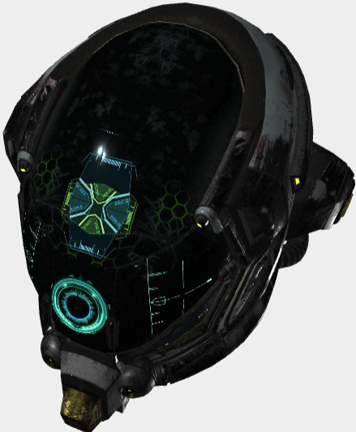

█▓▒░⡷⠂μ ＧＬ⠐⢾░▒▓█
muGL - Micro WebGL 2.0 Library for JavaScript and WebAssembly


Overview
mugl is a minimal, modern WebGL 2.0 3D graphics abstraction layer that removes the verbosity and state management aspect of WebGL. It is designed to be forward compatible with WebGPU.
mugl supports WebAssembly (WASM) in addition to JavaScript. With its AssemblyScript binding, you can even run the same JavaScript 3D app code on WASM (see examples). It runs on any modern web browser and mobile via React Native.
Additional WASM language bindings (e.g. Rust) and platform supports (e.g. native Desktop) are planned.
API Documentation
For JavaScript / AssemblyScript interface, see TSDoc: http://andykswong.github.io/mugl/latest/docs
For raw WebAssembly interface, see the API spec: API.wit
or the AssemblyScript imports: mugl.ts
Examples
Check out the live examples: https://andykswong.github.io/mugl/latest/examples
The source code of all examples can be found here.
All examples run on both JavaScript and WebAssembly, using the exact same code base! Click the toggle in the examples menu to seamlessly switch between the two environments.
glTF 2.0 Model Viewer
A small (~17KB) but full-featured glTF model viewer built on mugl is available as an example usage of this library: https://andykswong.github.io/mugl/latest/examples/gltf.html
The source code can be found here.
Any model from glTF-Sample-Models can be loaded using the model and variant URL parameter, e.g.: ?model=Buggy&variant=glTF-Binary to load the Buggy model. You can also use the url URL parameter to load a model from any source (example).

Usage
0. Install
npm install --save mugl
1. Basic Rendering
Below is the minimal mugl program to draw a triangle (See this example live here):
import { ShaderStage, VertexFormat, vertexBufferLayouts, WebGL } from 'mugl';
// 0. Prepare triangle vertex positions and colors data
const triangle = new Float32Array([
// position color
+0.0, +0.5, 1.0, 0.0, 0.0, 1.0, // vertex 0
+0.5, -0.5, 0.0, 1.0, 0.0, 1.0, // vertex 1
-0.5, -0.5, 0.0, 0.0, 1.0, 1.0, // vertex 2
]);
// 1. Create WebGL rendering device from an existing canvas
const device = WebGL.requestWebGL2Device(canvas);
if (!device) throw new Error('WebGL 2.0 is unsupported');
// 2. Create GPU buffer and upload the triangle data
const buffer = WebGL.createBuffer(device, { usage, size: triangle.byteLength });
WebGL.writeBuffer(device, buffer, triangle);
// 3. Compile the vertex and fragment shaders
const vertex = WebGL.createShader(device, {
usage: ShaderStage.Vertex,
code: `#version 300 es
layout (location=0) in vec2 position;
layout (location=1) in vec4 color;
out vec4 vColor;
void main () {
gl_Position = vec4(position, 0., 1.);
vColor = color;
}`
});
const fragment = WebGL.createShader(device, {
usage: ShaderStage.Fragment,
code: `#version 300 es
precision mediump float;
in vec4 vColor;
out vec4 outColor;
void main () {
outColor = vColor;
}`
});
// 4. Create the pipeline object
const pipeline = WebGL.createRenderPipeline(device, {
vertex, fragment,
// vertexBufferLayouts auto-calculates the stride and offsets of vertex attributes for you
// Attribute indices / ordering must match the attribute locations specified in vertex shader
buffers: vertexBufferLayouts([
{ attributes: [/* position */ VertexFormat.F32x2, /* color */ VertexFormat.F32x4] }
]),
});
// 5. Submit draw call in a render pass
WebGL.beginDefaultPass(device, { clearColor: [0.1, 0.2, 0.3, 1.0] }); // clear background to dark blue
WebGL.setRenderPipeline(device, pipeline);
WebGL.setVertex(device, 0, buffer);
WebGL.draw(device, 3); // 3 vertices to draw
WebGL.submitRenderPass(device);
2. Running on React Native Mobile Apps via expo-gl
mugl is compatible with expo-gl for 3D rendering on Expo / React Native mobile apps. Below is the setup required to use mugl with expo-gl:
import React from 'react';
import { Asset } from 'expo-asset';
import { GLView } from 'expo-gl';
import { WebGL } from 'mugl';
export default function App() {
return (<GLView style={{ width: 300, height: 300 }} onContextCreate={onContextCreate} />);
}
async function onContextCreate(gl) {
// 1. Create device by passing a canvas-like object that wraps the gl context
const canvas = { getContext(type) { return gl; } };
const device = WebGL.requestWebGL2Device(canvas);
// 2. Use expo-asset to load an image to GPU texture
const image = (await Asset.loadAsync(require('./image.png')))[0];
const size = [512, 512, 1];
const texture = WebGL.createTexture(device, { size });
WebGL.copyExternalImageToTexture(device, { src: image }, { texture }, size);
// 3. Setup other resources
const pipeline = const pipeline = WebGL.createRenderPipeline(device, { ... });
const buffer = WebGL.createBuffer(device, { ... });
WebGL.writeBuffer(device, buffer, ...);
const bindgroup = WebGL.createBindGroup(device, { layout, entries: [{ texture }] });
// 4. Render as usual
WebGL.beginDefaultPass(device);
WebGL.setRenderPipeline(device, pipeline);
WebGL.setVertex(device, 0, buffer);
WebGL.setBindGroup(device, 0, bindgroup);
WebGL.draw(device, ...);
WebGL.submitRenderPass(device);
// 5. Call the expo-gl 'swap buffers' API at the end of each frame
// See: https://docs.expo.dev/versions/latest/sdk/gl-view/#webgl-api
gl.endFrameEXP();
}
3. Running on WebAssembly
Import WebAssemblyGL to a WASM module:
import { WebAssemblyGL } from 'mugl';
// 1. Import WebAssemblyGL when instantiating a WASM module
const imports = {
mugl: WebAssemblyGL(), // Imports mugl binding
env: {
abort() { ... }
},
};
const { instance, module } = await WebAssembly.instantiateStreaming(
fetch('module.wasm'), imports
);
// 2. Expose WASM module memory to mugl
imports.mugl.memory = instance.exports.memory;
In the AssemblyScript WASM module, you can then use getCanvasById to get a canvas handle for creating a device:
import { getCanvasById, WebGL } from 'mugl';
const device = WebGL.requestWebGL2Device(getCanvasById('canvasId'));
See the examples source code on how to build an AssemblyScript mugl app.
License
This repository and the code inside it is licensed under the MIT License. Read LICENSE for more information.